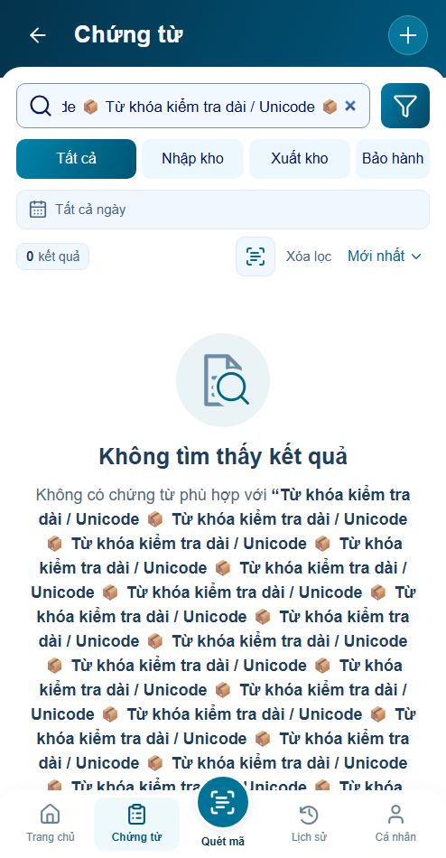
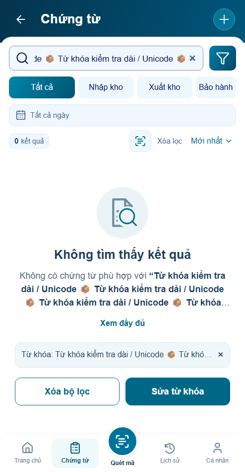
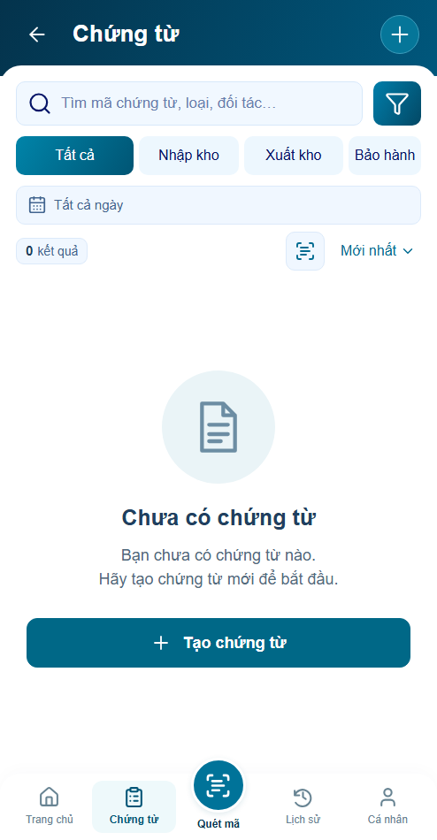
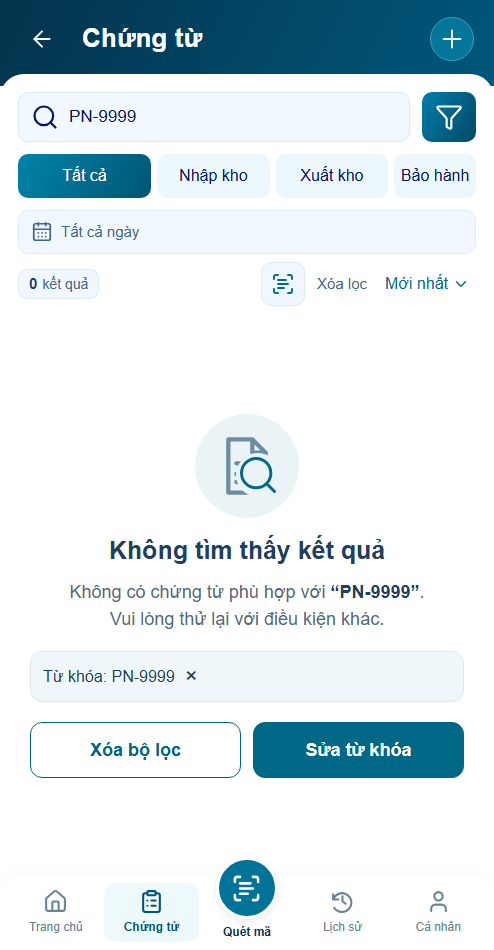
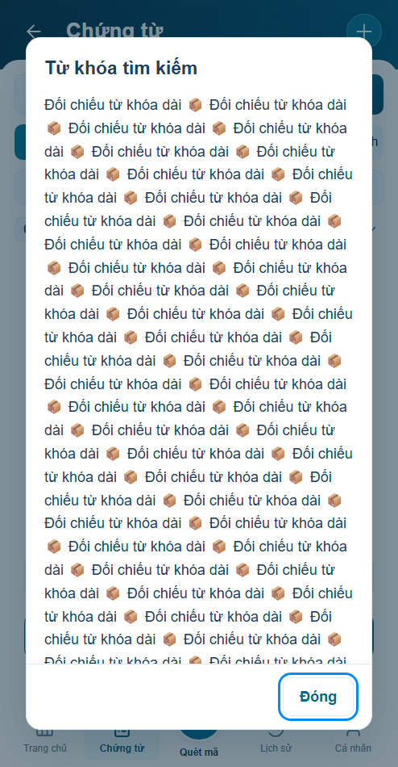
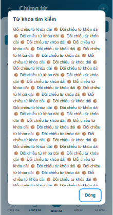
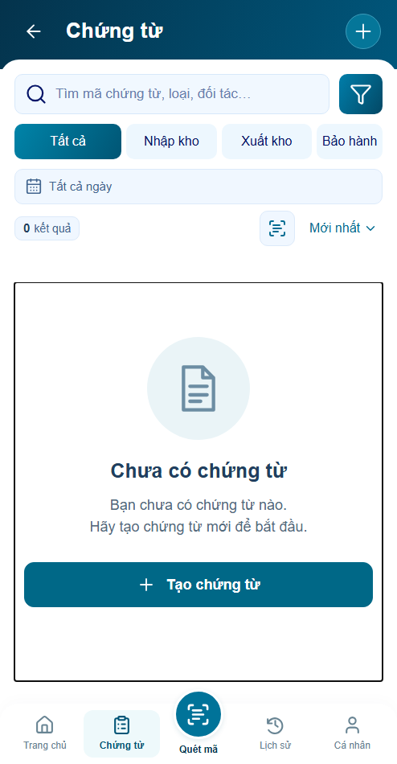
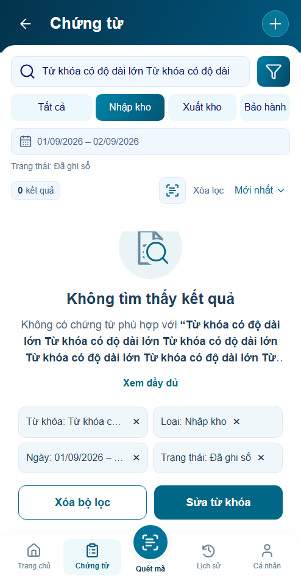

P16 r03 · Rà soát và sửa lỗi
Sáu nhóm lỗi được tái hiện và sửa trong Chứng từ/P16 và bước mở preview. Giữ các cập nhật P17/P18, khung494×950 và footer khóa.
Mở ứng dụng · Báo cáo và giới hạn · Bản r02
Behavior đạt trong các nhánh đã kiểm. Visual chờ review; backend chưa xác minh. Máy chủ preview có lúc tải module chậm; đã thêm thông báo/recovery, chưa xác nhận nguyên nhân hiệu năng máy chủ đã được xử lý.
Từ khóa dài — trước/sau cùng494×950
Trước: nút xử lý nằm dưới hơn hai màn hình
Sau: ba dòng + Xem đầy đủ; CTA trong vùng hiển thị
Bốn trạng thái hiện hành
P16.S01 · Đang tải

P16.S02 · Chưa có chứng từ

P16.S03 · Không tìm thấy kết quả

P16.S04 · Không tải được dữ liệu

Nội dung đầy đủ và focus
Đọc nguyên văn

Reader trong khung nhỏ

Dòng biến mất: focus vẫn trong app

Các điều kiện dài vẫn xử lý được
